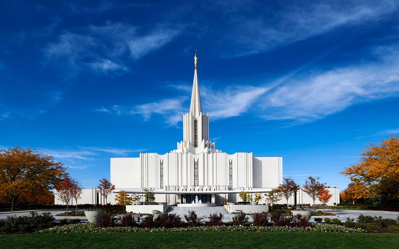

Jordan River Utah Temple
10200 S Temple Drive • South Jordan UT 84095-8814
Phone: 801-254-3003 • E-mail: jordan.river@temples.lds

Temple History
Announced: 3 February 1978
Groundbreaking: 9 June 1979
Dedicated: 16 November 1981
Rededicated: 20 May 2018
Temple Services
Clothing rental available
Cafeteria available
No patron housing available
No distribution center nearby
Area Weather
Currently:
Temperature: °F
Wind Chill:
Humidity: %
Wind Speed: MPH
Ordinance Schedule
Baptisms
asd;lkfja
Initiatories
alsdkjf
Endowments
a;lsdkjf
Sealings
;alkdsj